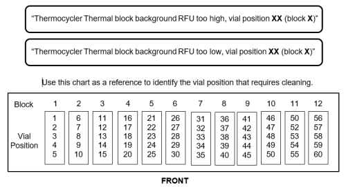
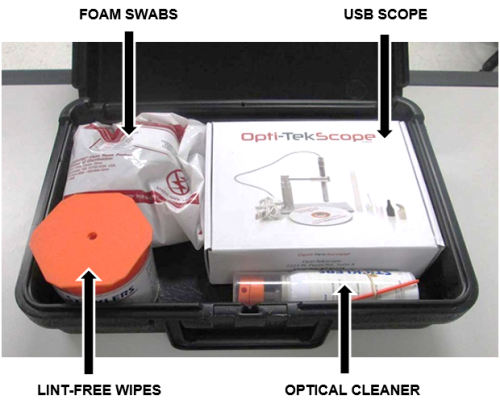
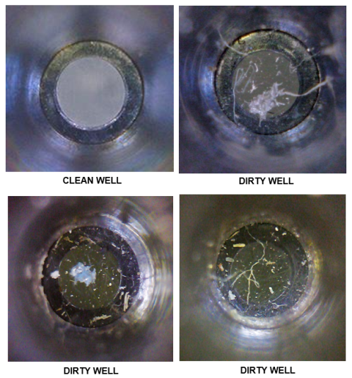
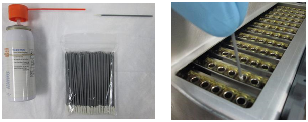
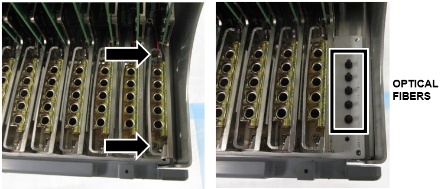

Thermocycler Manual Cleaning Procedure
Implementation
Perform this procedure when a well or wells of the Thermocycler module are suspected to be dirty. Panther Main can display the following startup messages that may indicate a dirty well:

Parts and Materials Required
- Panther Tool Kit
 TC Manual Cleaning Kit
TC Manual Cleaning Kit
- Case, Black Plastic
- Cleaner, Precision Optical
- Wipes, Lint-Free
- Swabs, Polyurethane Foam
- USB Microscope, 2MP, 8LED, 5 - 30 mm
- USB Microscope Software

Procedure
If you are using the USB Scope for the first time, refer to the setup and operation instructions.
- Use the scope to inspect the Thermocycler well indicated in the Panther Main startup message (or suspected to be dirty).

- Clean the dirty Thermocycler well using a foam swab.
- Place a bag of foam swabs and the optical cleaner (spray can) on an absorbent bench pad.
- Hold the optical cleaner over the pad and wet the end of the swab.
- In a circular motion, gently clean the inside of the dirty well.
- Inspect the well using the scope, and clean again if necessary. (Change swabs before cleaning a second well.)

- Restart Panther Main to see if the message has cleared. If the same "Thermocycler Thermal block background RFU too high" message is displayed, continue to step 4.
- Shutdown the Panther System and PC.
- Remove the Thermocycler from the system.
- Remove the 6 hex screws that secure the metal cover to the Thermocycler with a 3mm hex key.
- Set the cover aside.
- Remove the bank with the dirty well. (Bank 12 is being removed in the example below)
- Remove the 2 hex screws that secure the Thermocycler bank with a 2mm hex key.
- Gently but firmly lift the bank up and out of the Thermocycler. (The PCB is inserted in a slot above the row of banks but will slide out with minimal pressure.)
- Use a Lint Free Wipe to gently clean the end of each plastic optical fiber.

- Re-insert the bank and metal cover.
- Reinstall the Thermocycler in the system.
Verification
- Complete a BackGround Scan and Peek Lid Thermocycler Scan.
(Part A and Part B - Thermocycler Scanning and Automatic Cleaning Instructions)- If a well still does not pass, complete Deep Cleaning.
- If a well still does not pass after Deep Cleaning, replace the Thermocycler.
- Start Panther Main and verify the Panther Main start up message clears.

IMPORTANT—If the "background RFU too high (or low)" message does not clear after cleaning, replace the Thermocycler.

 button at the top of the page to send feedback, comments, or change requests.
button at the top of the page to send feedback, comments, or change requests.